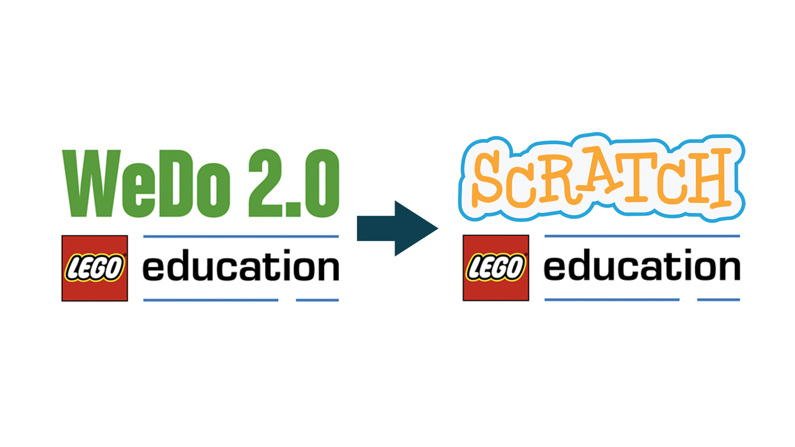
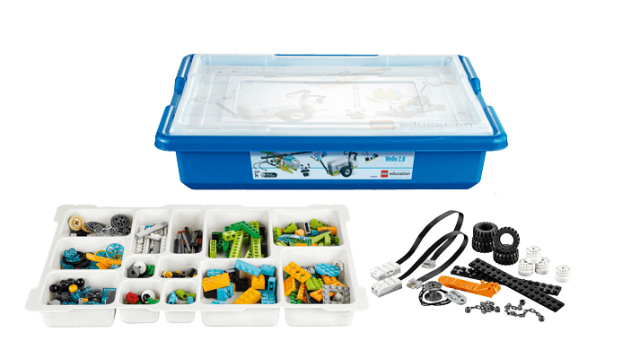

Что такое LEGO WeDo 2.0?
LEGO Education WeDo 2.0 — это образовательная платформа для начальной школы, которая позволяет детям создавать простые модели с моторами и датчиками, а затем программировать их на компьютере или планшете. Благодаря WeDo дети учатся не только конструировать, но и решать задачи, мыслить логически и работать в команде.

Что входит в набор?
- 🔧 Электронные компоненты: мотор, датчики наклона и расстояния
- 🔋 Смарт-блок с Bluetooth
- 🧱 Более 250 LEGO-деталей
- 📲 Программное обеспечение для Scratch или WeDo App

Чему учит WeDo?
Конструирование по схемам, основы программирования, развитие логики, творчества и командной работы. WeDo делает обучение увлекательным и понятным — через игру и эксперименты!
Начать творить!